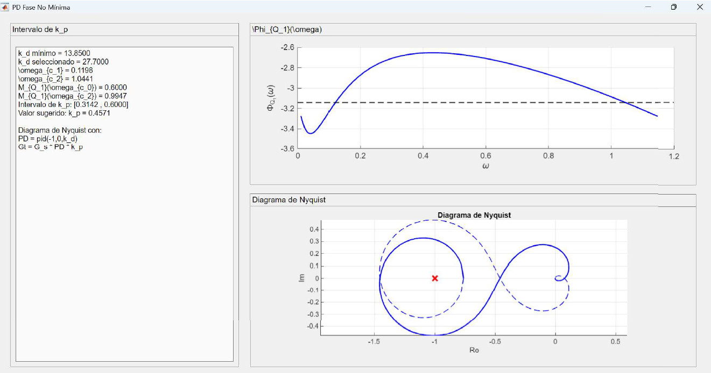
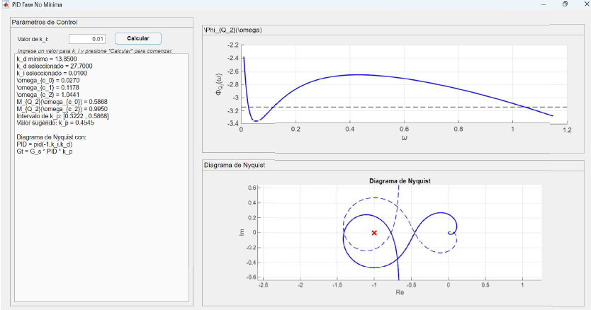
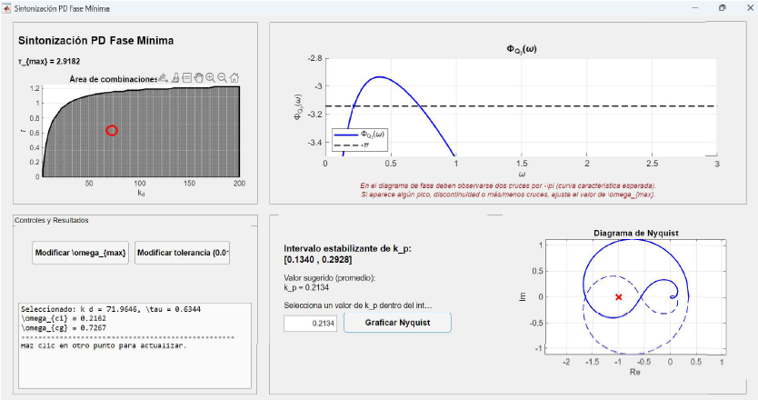

Esta suite interactiva basada en MATLAB permite el diseño de controladores PD/PID para procesos con retardos temporales y polos inestables, aplicando condiciones de estabilidad teóricas derivadas de mi investigación doctoral.



Contribuciones originales al campo de la automatización y control, publicadas en revistas indexadas de alto impacto.
Capacidad para traducir fenómenos físicos complejos en modelos matemáticos procesables, base fundamental de la ciencia de datos avanzada.
Experiencia en el refinamiento de parámetros de control, directamente aplicable a la sintonización de hiperparámetros en modelos de Machine Learning.